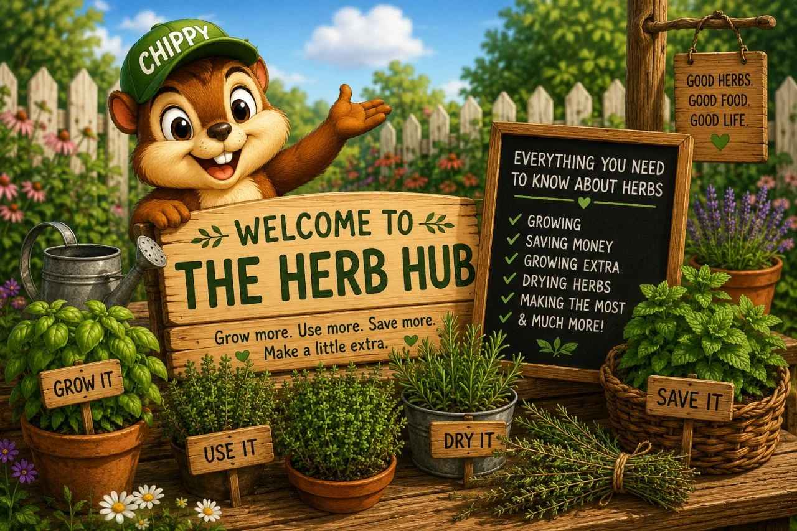

The Backyard Herb Hub
Everything you need to know about growing herbs for flavor, savings, and a little extra profit.
This is a clean place to follow the herb path that fits what you care about most, saving money, growing extra, drying herbs, making the most of a small space, or figuring out what to do with herbs before they get out of hand.
The herb pages themselves can be fuller and more visual. This page is just here to help you find the right next click without a bunch of distractions.

Existing QBL illustrationExplore the herb hub
If you have never grown herbs before and just want someone to tell you what to do, start here.
Want to stop reading random herb tips and actually plan a real herb garden? Start here.
Which herbs quietly give you the most everyday value back.
Track one small herb plant for a season and see what it actually turns into.
A broader practical guide to turning herb overflow into kitchen value, gifts, starts, and a little extra money.
Five herbs that quietly save money, get used often, and give a little back all season.
The herbs that hold their usefulness and flavor best after harvest.
If you want herbs that are easy to grow, actually useful, and not too overwhelming, start here.
Specific herb choices, real pot sizes, sunlight, watering, and whether each one is worth your limited space.
Simple ways to use, dry, gift, or sell herbs before they go to waste.
A practical look at what people are most likely to pay for when you grow more than you need.
☀️ Sun, 💧 water, 🪴 containers, ✂️ pruning, 🌸 flowers, and 🌿 what to expect all season long.
Why basil may be one of the easiest herbs to turn into quick practical value.
☀️ Sun, 💧 lighter watering, 🪴 containers, ✂️ clipping, 🫙 drying, and 🌿 quiet pantry value.
A small herb with more profit potential than people expect.
🌿 Enjoying the Herb Hub?
Get new herb guides, backyard ideas, projects, and updates from around the yard.
No spam. Just the next good thing when it’s ready.
If you only read 2 herb sections, make it these.
A practical look at which herb formats people usually understand fastest, and what tends to move better at backyard scale.
The broader herb value page, focused on why herbs earn their space so well.